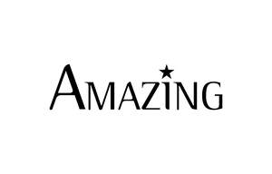

Trade Mark Journal No.2025/052 26 December 2025
UK00004309761 12 December 2025 (25,35)

- Class 25
- Clothing; Knitwear [clothing]; Jackets [clothing]; Ready-to-wear clothing; Headbands [clothing]; Headbands for clothing; Clothes; Jerseys [clothing]; Denims [clothing]; Collars [clothing]; Parts of clothing, footwear and headgear; Knitted clothing; Hoods [clothing]; Embroidered clothing; Wristbands [clothing]; Casual clothing; Waterproof clothing; Ready-made clothing; Clothing for sports; Sports clothing; Athletic clothing; Tops [clothing]; Clothing for cycling; Weatherproof clothing; Water-resistant clothing; Beach clothing; Men's clothing; Dance clothing; T-shirts; Short-sleeved T-shirts; Shirts; Turtleneck shirts; Printed t-shirts; Dress shirts; Long-sleeved shirts; Short-sleeved shirts; Short-sleeve shirts; Tee-shirts; Knit shirts; Corduroy shirts; Mock turtleneck shirts; Aloha shirts; Camouflage shirts; Sweat shirts; Button-front aloha shirts; Open-necked shirts; Yoga shirts; Polo shirts; Casual shirts; Collared shirts; Hooded sweat shirts; Ramie shirts; Shirts for suits; Sleep shirts; Shirt yokes; Yokes (Shirt -); Sweatshirts; Night shirts; Soccer shirts; Sleeveless jerseys; Golf shirts; Pique shirts; Jeans; Shorts [clothing]; Football shirts; Fleece shorts; Woven shirts; Denim pants; Rugby shirts; Shirt fronts; Shirts and slips; Sweatpants; V-neck sweaters; American football shirts; Tennis shirts; Hoodies; Dress pants; Denim jeans; Leggings [trousers]; Sport shirts; Sports shirts; Fishing shirts; Under shirts; Moisture-wicking sports shirts; Men's dress socks; Hunting shirts; Trousers shorts; Blue jeans; Sports shirts with short sleeves; Shorts; Capri pants; Pants; Sleeveless jackets; Hooded sweatshirts; Sleeveless pullovers; Denim jackets; Golf shorts; Swim shorts; Gym shorts; Sweatshorts; Polo sweaters; Polo knit tops; Tracksuit tops; Bermuda shorts; Turtleneck tops; Beanie hats; Hats; Bobble hats; Cloche hats; Bucket hats; Toques [hats]; Woolly hats; Top hats; Baseball hats; Ski hats; Baseball caps and hats; Fashion hats; Rain hats; Sun hats; Party hats [clothing]; Beach hats; Sports caps and hats; Beanies; Caps [headwear]; Caps being headwear; Knitted gloves; Head wear; Cap visors; Knitted caps; Head scarves; Headwear; Woollen socks; Gloves [clothing]; Gloves as clothing; Head sweatbands; Gloves; Golf clothing, other than gloves; Woolen clothing; Toe socks; Slipper socks; Vest tops; Socks; Ankle socks; Trouser socks; Sweat-absorbent socks; Thermal socks; Yoga socks; Bed socks; Men's socks; Tennis socks; Sports socks; Socks for men; Japanese style socks (tabi); American football socks.
- Class 35
- Retail services connected with the sale of clothing and clothing accessories.
Elephant Trading Limited